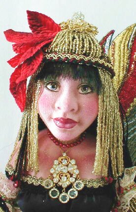

"Bellarosa... Queen of the Fire Faeries"(in the "Cloth over Sculpted Surface" Category)

Bellarosa was originally sculpted in polymer clay. From the original head and shoulderplate, I made a set of plaster molds and then poured them in Flumo. Once set, dried and cleaned, the face and shoulders were then covered with cotton knit fabric and detailed with a combination of pens, pencils and powdered colors. Her eyes are painted with acrylics and high gloss water-based lacquer. She is part of a limited edition that includes the original "Isabel", from which she was developed. The original Isabel travels with me to workshops where I teach the "cloth over papier mache" technique.
The original concept for "Bellarosa" arose on a hot summer night as I sat in the front garden of a dear friend in Tulsa, Oklahoma. As I watched with great fascination, fireflies gently floating in the trees and bushes around me, like a thousand tiny dancing stars come to earth. I could almost feel the presence of a fire fairy. Surely, there must be someone in charge of keeping the tiny lights of the fireflies aglow. I pictured the fire fairy queen hidden in a lovely cluster of red flowers, waiting patiently for her small charges to pass by. By the power of her lovely fire wand, they could continue to regenerate their magic light and turn the garden into an earthly galaxy of tiny moving stars. The queen holds court over other fire fairies. Each one is a monochromatic study, whose color is determined by her hiding place. Green fairies hide in leafy green trees and shrubs, while fairies of other colors hide in flowers and bushes that will camouflage them appropriately. As with the fireflies, the Fire Fairies only appear on hot, windless summer nights. The rest of the time, they stay high above us, where they work tirelessly to keep the stars alight. "Ivory Coast Lullaby" and "Cherish" also won awards in different sections of the same competition. |